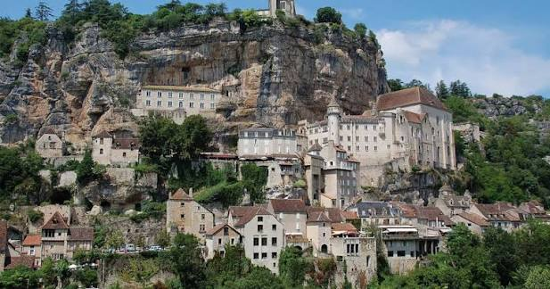

Pèlerinages
à
Rocamadour


⟹ Sanctuaire & Patrimoine Spirituel ⟸
Accroché à flanc de falaise au-dessus du canyon de l'Alzou, Rocamadour demeure quasiment inhabité jusqu'aux environs de l'an Mil, hormis quelques ermites retirés dans ce désert rocheux. Les premières mentions écrites du site datent de 1105, mais le pèlerinage y est déjà attesté depuis la seconde moitié du XIe siècle.

En 1166 est découvert, intact dans la roche, le corps d'un ermite que la tradition identifie à saint Amadour, fondateur légendaire du sanctuaire. Cette découverte spectaculaire propulse Rocamadour parmi les plus grands lieux de pèlerinage de la chrétienté médiévale, aux côtés de Jérusalem, Rome et Compostelle.
L'apogée du site se situe au XIIe et surtout au XIIIe siècle : des souverains comme Saint Louis viennent s'y recueillir devant la Vierge Noire, et l'abbé Géraud d'Escorailles fait rédiger dès 1172 le Livre des Miracles de Notre-Dame de Rocamadour, recueil de témoignages de guérisons et de grâces obtenues sur place.
Les siècles suivants sont plus sombres : la peste noire et les famines du XIVe siècle réduisent l'affluence, puis en 1562 les protestants pillent et incendient le sanctuaire pendant les guerres de Religion. Rocamadour n'en reste pas moins, aujourd'hui encore, une étape majeure sur les chemins de Saint-Jacques-de-Compostelle, inscrite au patrimoine mondial de l'UNESCO.
Bâti à même la falaise du canyon de l'Alzou, Rocamadour superpose sur plusieurs niveaux le village, la cité religieuse et le château qui la surplombe, offrant un spectacle architectural exceptionnel taillé dans la roche.
Ce cadre naturel spectaculaire, classé parmi les Plus Beaux Villages de France, a valu au site son inscription au patrimoine mondial de l'UNESCO au titre des chemins de Saint-Jacques-de-Compostelle en France.
Le canyon environnant, aujourd'hui protégé, abrite également des espèces remarquables adaptées aux falaises calcaires, faisant de Rocamadour à la fois un haut lieu spirituel et un site naturel préservé.
L'érosion de la falaise : le calcaire dans lequel s'ancre le sanctuaire est soumis aux infiltrations d'eau et aux mouvements de terrain, nécessitant une surveillance constante des bâtisses.
L'entretien d'un patrimoine ancien : les sanctuaires médiévaux, restaurés à plusieurs reprises au fil des siècles, exigent un travail continu de conservation.
Concilier tourisme et recueillement : Rocamadour attire chaque année une foule nombreuse de visiteurs, ce qui pose la question de l'équilibre entre affluence touristique et vocation spirituelle du lieu.
La transmission de la mémoire : maintenir vivante la tradition du pèlerinage face à la baisse générale de la pratique religieuse reste un défi pour le sanctuaire.
Rocamadour se visite toute l'année, mais l'ambiance du pèlerinage se ressent particulièrement lors des grandes fêtes mariales et du festival de musique sacrée organisé chaque année au mois d'août.
Le Grand Escalier reste le point de passage traditionnel entre le village et la cité religieuse, pour qui souhaite suivre le parcours historique des pèlerins.
La basilique Saint-Sauveur et la crypte Saint-Amadour se visitent librement, avec des offices et temps de recueillement proposés régulièrement dans la chapelle Notre-Dame.
Les pèlerins de Compostelle font souvent étape à Rocamadour sur la voie du Puy, profitant du sanctuaire comme lieu de repos et de prière avant de reprendre leur chemin.
Renseignements et accueil auprès du sanctuaire de Rocamadour et de l'Office de Tourisme de la Vallée de la Dordogne.